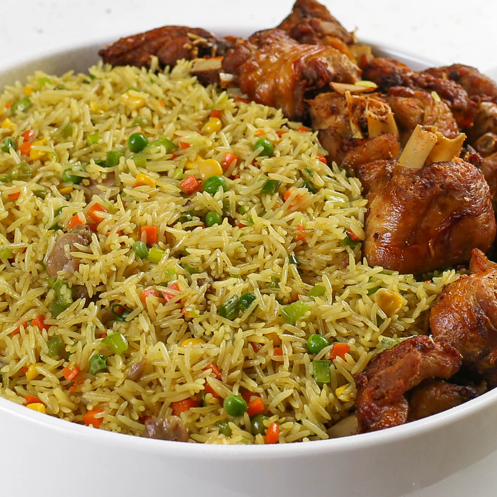

Home
Jollof Rice Recipes

Description
Fried rice is a flavorful dish made by stir-frying cooked rice with vegetables, oil, and seasonings. It is known for its rich taste, colorful ingredients, and slightly smoky aroma that comes from cooking the rice in a hot pan.
This dish is popular around the world and is often served with chicken, shrimp, or eggs. It is easy to prepare and is a great way to turn simple ingredients into a delicious and satisfying meal.
Ingredients
- 2 cups cooked rice
- 1 cup mixed vegetables (carrots, peas, sweet corn)
- 2 eggs
- 1 onion
- 2 tablespoons vegetable oil
- 2 tablespoons soy sauce
- 1 teaspoon curry powder
- Salt to taste
- Cooked chicken pieces (optional)
Steps
- Heat vegetable oil in a large pan or wok over medium heat.
- Add the chopped onions and cook until they become soft.
- Add the mixed vegetables and stir-fry for a few minutes.
- Push the vegetables to one side of the pan and scramble the eggs.
- Add the cooked rice into the pan and mix everything together.
- Add soy sauce, curry powder, and salt to taste.
- Stir everything well and cook for a few more minutes.
- Serve hot with chicken or any preferred protein.